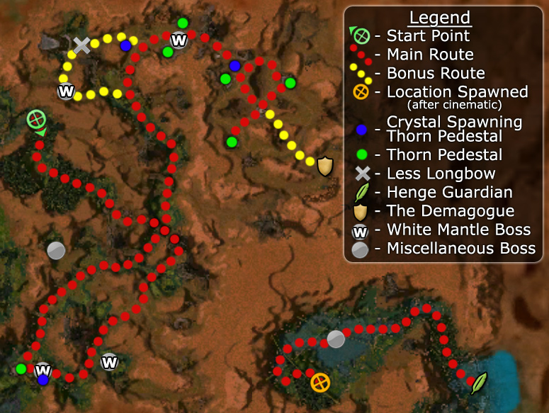

Elite: None / not listed
M12
Aurora Glade
◉ Mission Map

Click to enlarge · Local cache · Wiki
Summary (click to expand)
The Shining Blade 's plan to reassemble the portal to the Henge of Denravi has been betrayed to the White Mantle , who have been slaughtering all who stand in their way as they try to claim it. Should the Shining Blade succeed, they will gain a new, hidden base of operations to strike back at the Mantle. Fail, and not only will the Henge be lost to the Shining Blade, but their resistance movement will collapse as well.
Region: Maguuma Jungle · Mission: 12 of 25 · Type: Cooperative
✓ Objectives
Gain access to the Henge of Denravi.
- Get to the Henge Portal.
- Attune the Henge Portal before the White Mantle do.
- ADDED: Attune the thorn pedestal to clear the vine gate.
- ADDED: Attune both thorn pedestals to clear the vine gate.
- ADDED: Kill the Henge Guardian.
- *BONUS* Assassinate the Demagogue.
→ Walkthrough
The first part of this mission is typical: hack and slash through the usual Maguuma Jungle foes and bosses. Things change drastically when you reach the Druids.
The goal of the mission is to attune a set of three thorn pedestals simultaneously, while preventing the White Mantle from doing the same thing. Attuning the set clears the Vine Gate, giving your party access to the Henge Guardian; defeating it completes the mission.
There are two types of pedestals:
- Spawn-pedestals are attended by a single Druid. Talk to the Druid once to enable the pedestal to produce crystals; click on the pedestal to get a crystal. That pedestal will not produce a crystal until the currently-carried one is dropped or used.
- Attunement-pedestals are empty until your party or the Mantle add a crystal; they also have a beam of light pointing upwards. The light is white when the pedestal is empty; it changes to blue when your team claims it; and it becomes red when the Mantle attune it.
If you drop a crystal, it will break and you must grab a new one (and you will drop it anytime you switch weapons or shadowstep). As with any bundle, while carrying crystals, you do not gain the benefit of any of your weapon mods.
When you attune the southernmost pedestal, it opens a vine-gate allowing you to proceed northward. (The Mantle do not attempt to attune this pedestal.) After following the path, you will find Less Longbow: dispose of his attackers and talk to him to unlock the Bonus.
East of Less is another area with three thorn-pedestals. One is a spawn-pedestal, one attunement-pedestal has already been claimed by the Mantle, and the third will be unclaimed. There are several ways to proceed at this point. Generally, you want to defeat the two groups of Mantle (including a Boss), visit the spawn-pedestal, talk to the Druid, grab a crystal, claim the right attunement-pedestal and eventually claim the leftmost pedestal, which opens another vine-gate at the eastern end of the area.
Once this gate opens, the race is on between your team and the White Mantle to claim the three pedestals in the large area to the East. Get another crystal, attune the left pedestal. Be prepared to rush to the Mantle's spawn-pedestal just beyond the gate.
Method 1: Kill all the Mantle at the left shrine
This works with a single player. Pick up a crystal and go to the left-most (east) pedestal; you should arrive as the Mantle are leaving. Attune the pedestal, then flag your party around it. As the Mantle return to reclaim this pedestal first, grab another crystal, and then go to the pedestal at the far right (south-west) side. Alternate between claiming the left and right pedestals, as the Mantle will usually succeed in capturing your AI-held pedestal; however, if you have a good team, you might return from capturing the right-hand pedestal to find that your party has prevented the Mantle from recapturing their original pedestal. Each time the Mantle return to the left pedestal your party will kill the runner's escort. Eventually the only Mantle left will be the runner. You will know this when you no longer see your party taking damage. (Be careful not to capture all of the pedestals at once!) Rejoin your party and kill the runner. Kill the Demagogue and claim any remaining pedestals.
Remember that killing the runner gives the Mantle an advantage: a living runner will have to return to grab a crystal, while reinforcement runners spawn near their team's crystal-supply pedestal. It also means that you might have to confront two teams of Mantle (the original escorts and the new runner's team).
Your build should include a Speed Boost (or you could use a Birthday Cupcake or Rock Candy) for the first part and one of the following: a Snare, crippling skill or a Spike for dealing with the White Knight runner. Signet of Spirits is an ideal choice, since it distracts your opponents while doing noticeable damage.
If using heroes and/or henchmen, position their flags such that they are, behind the left-most pedestal (towards the Druid) but still in range of it; this way the number of White Mantle encountered at once will not overwhelm them (especially true in Hard mode). After the heroes/henchmen fight off the first wave, spread their flags out.
A frequently successful variation is to attune the bottom (west) pedestal (closest to the crystal spawn point) and the pedestal at the far right (south-west) side alternately while having the party flagged slightly west of the center. Alternatively, particularly in Hard Mode when the runner moves faster, you could flag your party in Guard mode along the runner's return route from the left (east) pedestal in order to body block them without killing them, and give you more time to capture the remaining pedestals.
Method 2: Running the crystals
This approach needs at least two human players in the party, with three players being preferred. Using this method, you can complete this objective without engaging the White Mantle contingent at all (excepting the Demagogue for the bonus). Simply run a crystal to each of the three pedestals. You should have some speed boosts in your skillbar to allow you to outrun the White Mantle teams; each time they claim a pedestal, another team immediately heads out to claim the next.
Just remember to keep at least one pedestal claimed to avoid failing the mission.
You should have two or three players standing by the druid and the crystals. One player should pick up a crystal and run to the nearest thorn pedestal. As soon as it is set in place, a new crystal will spawn, which the second player should grab and head to the next pedestal. If you only have two runners, the first runner should return to the crystal spawn point while the second runner is out. Either way, once the crystal spawns again, repeat the process. If this is coordinated properly, you should have no trouble at all.
To make sure the White Mantle do not capture any pedestals, you can station the balance of your party (including any heroes/henchmen) at the chokepoint in the center pathway.
Note that this method can be used, with slight modification, to easily gain mission and bonus. Have two people run crystals, the second waiting by the crystal spawn point to pick it up the moment the other has attuned a pedestal. It is important that these two do not attune the last pedestal until the bonus is gained. A third person, or the rest of the party, kills the Demagogue. This can easily be done by following the south wall, you should not need to kill any White Mantle other than him if you take this path. Now the most important part: do not aggro the White Mantle runners. Two non-buffed runners can easily keep the portals attuned without hindering the White Mantle. If a third human player is not present, then this method can be done using only two. The Demagogue slayer (with the bulk of the team) retraces steps and becomes the second runner after the bonus has been gained.
It can be accomplished with a single 33% speed-boosted runner while the bulk of the team circles counter clockwise, keeping right arm against the outer wall, to kill the Damagogue. Do not engage or aggro any of the other White Mantle. The runner attunes the nearby shrine, then the team grabs the next crystal and attunes the far right shrine on its way around. The Runner then attunes the left shrine, comes back, and attunes whatever shrine has been recaptured. It is unlikely but possible the runner can outrace the team killing the Demogogue, make sure not to cap the last shrine until the bonus is complete.
Alternatively: Push The White Mantle Garrison
Proceed to the White Mantle garrison (where the Demagogue is located) directly Southeast off the main entrance of the Henge Portal - Defeat the whole White Mantle army coming from the garrison, then proceed with the Thorn Pedestal and attune the Henge Portal with no White Mantle taking the Rune Crystal from you. (It is a bonus objective as well which is a plus)
The Guardian
Regardless of which of the above methods you use, when you finally claim all three pedestals, a cinematic will play showing your party being teleported to the Henge. Make your way through the token resistance there to confront the Henge Guardian. He is flanked by two Root Behemoths that can wear down your party if they are not eliminated quickly. When you take out all three of them, the mission ends. The best way of killing them is by using damage over time spells such as Fire Storm, as the enemies are stationary.
★ Bonus
Just before you enter the area with the three pedestals, you will see a Shining Blade warrior named Less Longbow near two White Mantle Knights. As you approach (to within 2 aggro circles), the Mantle will engage him in combat if Less is close enough. You will have to join the fight and save Less. If Less dies the bonus cannot be completed. To avoid this, it is possible to flag heroes/henchmen ahead; use the mission map to position them before triggering. After the two Knights are dead, speak to Less to trigger the bonus. Note: to receive credit for the bonus, you must speak to this NPC before you kill the Demagogue. Less must complete the dialogue before the Demagogue is killed to receive the bonus. (However, once you have done so, you will receive credit even if he dies later.)
The Demagogue is located in the White Mantle starting area, on the other side of the arena with the three pedestals. You must kill him before placing the last crystal in the pedestal. The troops stationed here are also the ones that will run the crystals out to claim the pedestals, so if you killed them all previously using Method 1 described above, he will be alone. Otherwise, you will need to deal with them in addition to the Demagogue himself.
If you do not want to fight all of them, in fact any of them, one approach is to head to the pedestal on the far right from the entrance, where you will find a path that leads past the bulk of his forces. From there, provided you hug the side furthest from them you can eliminate the Demagogue and if you are lucky, his troops will not aggro. Tread mindfully near the wall to make sure following Heroes and Henchmen stay close. The Demagogue group might as well take a crystal and attune the right pedestal on their way.
If you are having trouble holding the pedestals, one method is to keep your heroes/henchmen at one pedestal (preferably the one to the far right) and then capture 2 and keep 2 at all times, that way when the runners capture one you will still have another and can easily regain it until all the White Mantle are dead.
If you are only going for the bonus, you can effectively skip the shuffling and take the back route directly to the Demagogue. The following method works very well even with hero/henchmen parties, especially in hard mode: Grab the crystal from the Thorn Pedestal, and place it in the center shrine's pedestal. Run back and grab another crystal, and take it to the one on the far right. Without running skills, you will still have a few seconds to spare. Taking the back route, avoid the rest of the troops and go straight to the Demagogue. You will be able to kill him with just enough time to spare; you will fail the mission, but you will get the bonus. This is a very simple and reliable method. It works even better if you bring party-wide speed boosts (such as "Fall Back!") and interrupts or knock downs to prevent him from activating Healing Signet.
◆ Hard Mode
- Spread your team out to avoid standing in Energy Surge and Searing Heat, and deal with the White Mantle Sycophants and Savants first in enemy groups.
- If there's a White Mantle Abbot in the group, consider dealing with them first while merely disabling the Sycophants and Savants until then. Searing Heat especially is easy to interrupt due to its long and somewhat distinct casting animation.
- Before and after the Henge Portal section the only enemies that should be particularly hard with a competent team are the Moss Scarabs, due to their large groups.
- The large amounts of White Mantle foes at the Henge Portal and their increased movement speed makes capturing the shrines without killing them all significantly more difficult.
- To prevent them from overwhelming the party do not kill the runner, instead snare them and try to kill a few of the White Mantle accompanying them, withdrawing with the whole party after the runner gets out of Earshot to get a new crystal yourself. When only two or fewer enemies accompany the runner it should be safe to kill the runner and the rest, and then the Demagogue and also attune the shrines.
☠ Bosses & Elites
Elite: None / not listed
Elite: None / not listed
Elite: None / not listed
Elite: None / not listed
Elite: None / not listed
Elite: None / not listed
Elite: None / not listed
Elite: None / not listed
Elite: None / not listed
Elite: None / not listed
✦ Tips & Notes
Skill recommendations
- Snares help considerably in slowing down the runners (although many players report success without them).
- Area of effect skills come in handy, as White Mantle groups tend to clump. They can also be used against the Henge Guardian and his Behemoths.
- Signet of Spirits builds on player character allows for damage dealing at the same time as running.
- White Mantle Seekers use Dryder's Defenses to block attacks. This can make it difficult to hit them with attacks if they are carrying the crystals. Use stance removal skills to end it or non-attack skills.
Notes
| The Guild Wars 2 Wiki has an article on Aurora's Remains. |
- Sometimes Less Longbow will not be under attack when you find him. When he is under attack, preventing his death will give you a Morale Boost.
- This is one of only a few Morale Boosts that also apply to Animal companions.
- You can also use the crystals located near the Demagogue.
- Complete exploration of the mission area will add approximately 1.0% to the Tyrian Cartographer title. The first 0.7% can be explored before the cinematic that teleports you to the last bit of the mission, leaving 0.3% to be explored before you kill the Henge Guardian.
- Placing all crystals before killing the Demagogue will start the end cinematic, preventing bonus completion.
- After completing this mission, your party will be teleported to Henge of Denravi.
- Although Less Longbow refers to him as a champion, the Demagogue is not a boss: he does not give a morale boost when killed and you cannot cap skills from him.
- Completion of this mission will fill in page #5 of The Flameseeker Prophecies storybook.